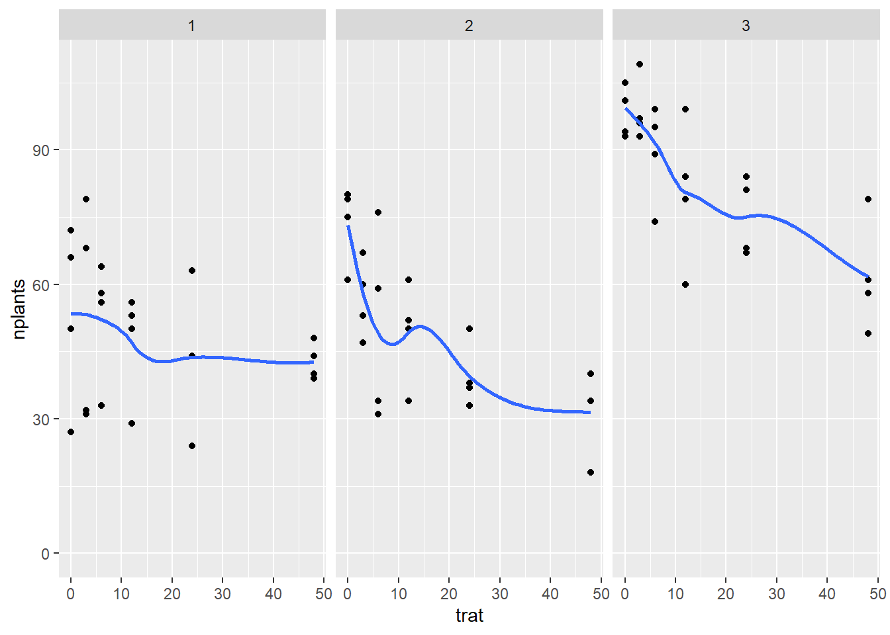
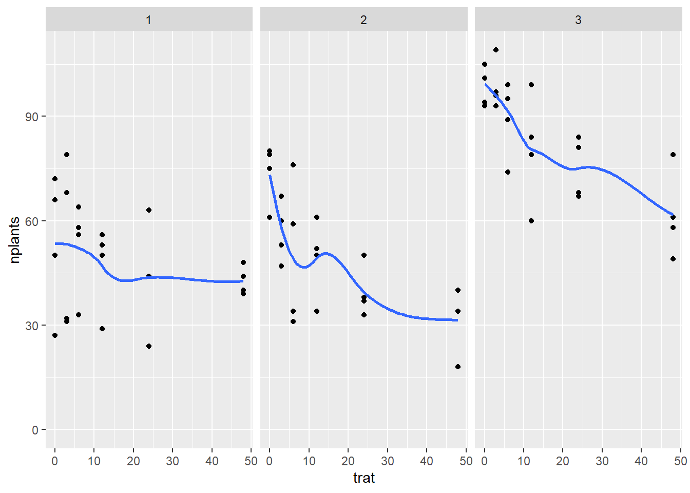
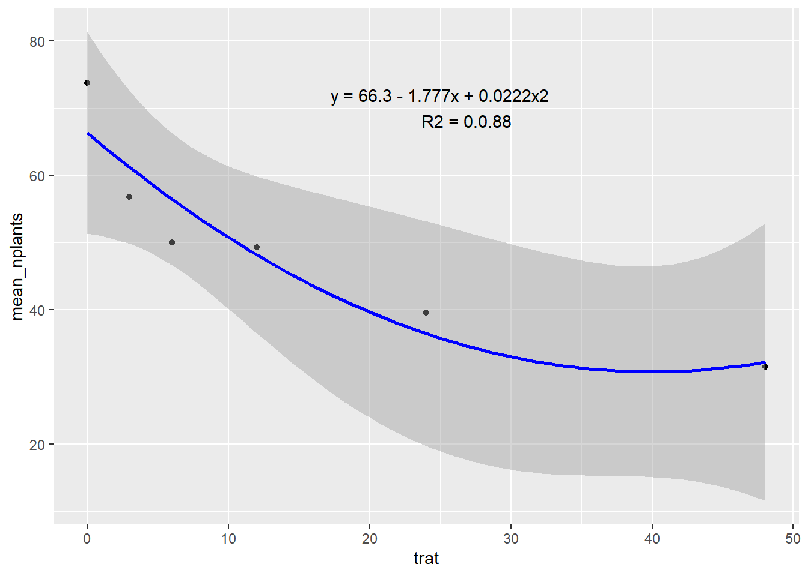
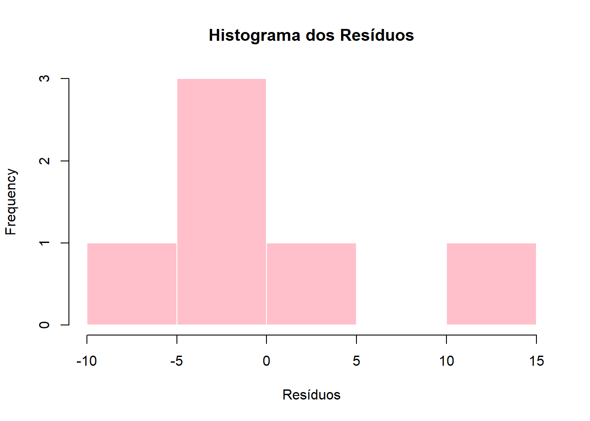
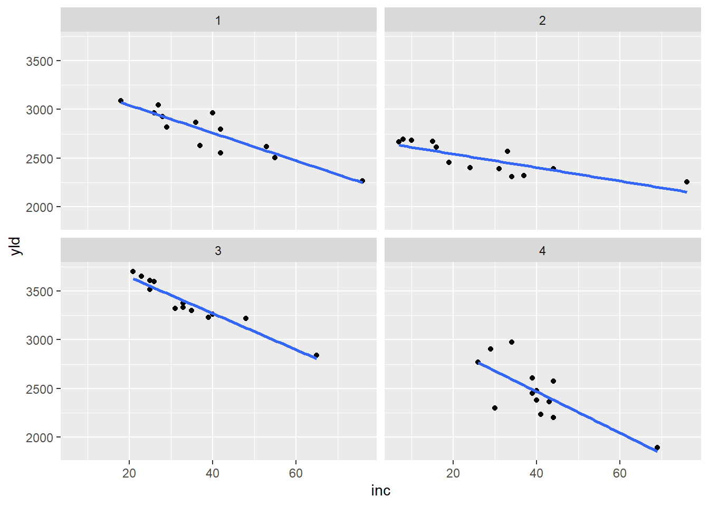

Code

A análise de correlação é uma técnica estatística utilizada para quantificar a força e a direção da relação linear entre duas variáveis contínuas. Ela indica o grau em que essas variáveis variam em conjunto.
A correlação pode ser:
Positiva: ambas as variáveis aumentam ou diminuem juntas
Negativa: uma variável aumenta enquanto a outra diminui;
Nula: não há relação linear aparente entre elas.
O principal indicador usado é o coeficiente de correlação de Pearson, que varia entre -1 e +1:
+1: correlação linear positiva perfeita;
-1: correlação linear negativa perfeita;
0: ausência de correlação linear.
É importante ressaltar que a correlação não implica causalidade, ou seja, mesmo quando duas variáveis estão correlacionadas, isso não significa que uma causa a outra.

Para ajustar modelos lineares em R, utiliza-se a função lm(), que recebe como argumentos a fórmula da relação entre a variável dependente e a independente (por exemplo, y ~ x) e o conjunto de dados. O modelo ajustado é armazenado como um objeto do tipo "lm". Para visualizar os resultados do ajuste, utiliza-se a função summary(), que retorna os coeficientes estimados, valores-p, o coeficiente de determinação (R²), e outros diagnósticos importantes.
O R² indica a proporção da variação da variável resposta explicada pelo modelo. Seu valor varia entre 0 e 1:
R² = 0: o modelo não explica nenhuma variação;
R² = 1: o modelo explica totalmente a variação da variável dependente.
Valores mais altos de R² indicam melhor ajuste aos dados.
É possível comparar um modelo linear simples (y ~ x) com um modelo quadrático (y ~ x + I(x^2)) para verificar qual se ajusta melhor aos dados. O critério pode ser baseado no R², AIC ou inspeção gráfica dos resíduos.
estande2 <- estande |>
filter(exp ==2) |>
group_by(trat) |>
summarise(mean_nplants = mean(nplants))
estande2|>
ggplot(aes(trat, mean_nplants))+
geom_point()+
#geom_line()
geom_smooth(formula = y ~ poly(x, 2), method = "lm", color = "blue")+
annotate(geom = "text",
x = 25, y = 70,
label = "y = 66.3 - 1.777x + 0.0222x2
R2 = 0.0.88")
Enquanto a correlação linear avalia a relação entre duas variáveis com base em uma linha reta, o modelo quadrático permite identificar padrões não lineares, especialmente aqueles que descrevem uma curva (por exemplo, em forma de U ou inverso de U).
Para ajustar um modelo quadrático no R, utiliza-se a função lm(), assim como no modelo linear simples. A diferença está na fórmula: é necessário incluir o termo quadrático da variável independente.
Call:
lm(formula = mean_nplants ~ trat, data = estande2)
Residuals:
1 2 3 4 5 6
12.764 -2.134 -6.782 -3.327 -4.669 4.147
Coefficients:
Estimate Std. Error t value Pr(>|t|)
(Intercept) 60.9857 4.5505 13.402 0.000179 ***
trat -0.7007 0.2012 -3.483 0.025294 *
---
Signif. codes: 0 '***' 0.001 '**' 0.01 '*' 0.05 '.' 0.1 ' ' 1
Residual standard error: 8.117 on 4 degrees of freedom
Multiple R-squared: 0.752, Adjusted R-squared: 0.69
F-statistic: 12.13 on 1 and 4 DF, p-value: 0.02529
Call:
lm(formula = mean_nplants ~ trat + trat2, data = estande2)
Residuals:
1 2 3 4 5 6
7.4484 -4.4200 -6.4386 1.0739 3.0474 -0.7111
Coefficients:
Estimate Std. Error t value Pr(>|t|)
(Intercept) 66.30156 4.70800 14.083 0.000776 ***
trat -1.77720 0.62263 -2.854 0.064878 .
trat2 0.02223 0.01242 1.790 0.171344
---
Signif. codes: 0 '***' 0.001 '**' 0.01 '*' 0.05 '.' 0.1 ' ' 1
Residual standard error: 6.517 on 3 degrees of freedom
Multiple R-squared: 0.8801, Adjusted R-squared: 0.8001
F-statistic: 11.01 on 2 and 3 DF, p-value: 0.04152Quando se trabalha com duas variáveis resposta contínuas, é comum investigar a relação entre elas por meio da análise de correlação. O coeficiente de correlação de Pearson (R) é utilizado para quantificar essa relação linear.
O valor de R varia entre -1 e 1, indicando a direção e a intensidade da associação:
Valores próximos de +1 indicam forte correlação positiva,
Valores próximos de -1 indicam forte correlação negativa,
Valores próximos de zero indicam pouca ou nenhuma correlação linear.
O coeficiente de determinação, R², corresponde ao quadrado de R, e representa a proporção da variância de uma variável que é explicada pela outra em uma relação linear. Como R² é o quadrado de R, seu valor será sempre positivo e menor ou igual a 1. Portanto, para valores positivos de R, R² será menor ou igual a R.
# A tibble: 6 × 5
study treat inc scl yld
<dbl> <dbl> <dbl> <dbl> <dbl>
1 1 1 76 2194 2265
2 1 2 53 1663 2618
3 1 3 42 1313 2554
4 1 4 37 1177 2632
5 1 5 29 753 2820
6 1 6 42 1343 2799
O coeficiente de correlação de Pearson é específico para medir relações lineares entre duas variáveis contínuas. Isso significa que ele avalia apenas o grau de associação linear; se a relação entre as variáveis for não linear, o coeficiente de Pearson pode não representar adequadamente a força ou a direção da associação.
cor.test()No R, a função cor.test() é utilizada para calcular o coeficiente de correlação entre duas variáveis. Além de estimar o valor da correlação, essa função realiza um teste de hipótese para verificar se a correlação observada é estatisticamente significativa, fornecendo o valor-p e o intervalo de confiança.
Filtrando o experimento 1:
# A tibble: 13 × 5
study treat inc scl yld
<dbl> <dbl> <dbl> <dbl> <dbl>
1 1 1 76 2194 2265
2 1 2 53 1663 2618
3 1 3 42 1313 2554
4 1 4 37 1177 2632
5 1 5 29 753 2820
6 1 6 42 1343 2799
7 1 7 55 1519 2503
8 1 8 40 516 2967
9 1 9 26 643 2965
10 1 10 18 400 3088
11 1 11 27 643 3044
12 1 12 28 921 2925
13 1 13 36 1196 2867
Pearson's product-moment correlation
data: mofo1$inc and mofo1$yld
t = -6.8451, df = 11, p-value = 2.782e-05
alternative hypothesis: true correlation is not equal to 0
95 percent confidence interval:
-0.9699609 -0.6921361
sample estimates:
cor
-0.8999278 Filtrando o experimento 2:
# A tibble: 13 × 5
study treat inc scl yld
<dbl> <dbl> <dbl> <dbl> <dbl>
1 2 1 76 1331 2257
2 2 2 44 756 2393
3 2 3 24 338 2401
4 2 4 33 581 2568
5 2 5 37 588 2320
6 2 6 34 231 2308
7 2 7 31 925 2389
8 2 8 16 119 2614
9 2 9 10 394 2681
10 2 10 8 206 2694
11 2 11 15 275 2674
12 2 12 7 131 2666
13 2 13 19 588 2454
Pearson's product-moment correlation
data: mofo1$inc and mofo1$yld
t = -4.6638, df = 11, p-value = 0.0006894
alternative hypothesis: true correlation is not equal to 0
95 percent confidence interval:
-0.9426562 -0.4790750
sample estimates:
cor
-0.8149448 Filtrando o experimento 3:
# A tibble: 13 × 5
study treat inc scl yld
<dbl> <dbl> <dbl> <dbl> <dbl>
1 3 1 65 5013 2839
2 3 2 33 3619 3375
3 3 3 40 2325 3264
4 3 4 35 2588 3301
5 3 5 48 3969 3220
6 3 6 31 1556 3321
7 3 7 39 3175 3229
8 3 8 25 1763 3517
9 3 9 26 2894 3595
10 3 10 21 350 3702
11 3 11 23 419 3652
12 3 12 25 644 3608
13 3 13 33 2850 3334
Pearson's product-moment correlation
data: mofo1$inc and mofo1$yld
t = -10.9, df = 11, p-value = 3.105e-07
alternative hypothesis: true correlation is not equal to 0
95 percent confidence interval:
-0.9872663 -0.8579544
sample estimates:
cor
-0.956692 Filtrando o experimento 4:
# A tibble: 13 × 5
study treat inc scl yld
<dbl> <dbl> <dbl> <dbl> <dbl>
1 4 1 69 6216 1893
2 4 2 39 2888 2451
3 4 3 41 2272 2232
4 4 4 39 2868 2609
5 4 5 40 2412 2383
6 4 6 40 2372 2480
7 4 7 44 3424 2577
8 4 8 43 1744 2367
9 4 9 26 1456 2769
10 4 10 29 1732 2907
11 4 11 30 1080 2298
12 4 12 34 1592 2976
13 4 13 44 3268 2200
Pearson's product-moment correlation
data: mofo1$inc and mofo1$yld
t = -3.7242, df = 11, p-value = 0.003357
alternative hypothesis: true correlation is not equal to 0
95 percent confidence interval:
-0.9194503 -0.3327077
sample estimates:
cor
-0.7467931 Vamos fazer uma matriz de correlação, que nada mais é que uma tabela que resume as relações entre pares de variáveis em um conjunto de dados, exibindo os coeficientes de correlação, geralmente de Pearson, para cada combinação possível. Essa ferramenta é essencial para identificar padrões de associação, intensidade e direção entre múltiplas variáveis simultaneamente.
A matriz ajuda a compreender rapidamente como as variáveis estão relacionadas, permitindo detectar correlações positivas, negativas ou ausência de associação, e é amplamente utilizada em análises exploratórias e prévias a modelos estatísticos mais complexos.
# A tibble: 13 × 5
study treat inc scl yld
<dbl> <dbl> <dbl> <dbl> <dbl>
1 3 1 65 5013 2839
2 3 2 33 3619 3375
3 3 3 40 2325 3264
4 3 4 35 2588 3301
5 3 5 48 3969 3220
6 3 6 31 1556 3321
7 3 7 39 3175 3229
8 3 8 25 1763 3517
9 3 9 26 2894 3595
10 3 10 21 350 3702
11 3 11 23 419 3652
12 3 12 25 644 3608
13 3 13 33 2850 3334
Pearson's product-moment correlation
data: mofo1$inc and mofo1$yld
t = -10.9, df = 11, p-value = 3.105e-07
alternative hypothesis: true correlation is not equal to 0
95 percent confidence interval:
-0.9872663 -0.8579544
sample estimates:
cor
-0.956692 inc scl yld
inc 1.0000000 0.8441514 -0.956692
scl 0.8441514 1.0000000 -0.836512
yld -0.9566920 -0.8365120 1.000000O pacote corrplot é amplamente utilizado para a visualização e análise de matrizes de correlação, oferecendo ferramentas gráficas que facilitam a interpretação das relações entre variáveis em conjuntos de dados.
corr.test():
Realiza testes estatísticos sobre a matriz de correlação, calculando coeficientes, valores-p e intervalos de confiança. Essa função ajuda a avaliar a significância das correlações observadas.
corrplot():
Gera diferentes tipos de gráficos para representar visualmente a matriz de correlação. A função permite escolher entre múltiplos estilos e opções de personalização, tornando a análise mais intuitiva.
corrplot():Métodos (method) — tipos de gráficos disponíveis:
"circle" (círculos)
"square" (quadrados)
"ellipse" (elipses)
"number" (exibe os valores numéricos dos coeficientes)
"shade" (sombras)
"color" (cores preenchidas)
"pie" (gráfico de pizza)
A intensidade da cor ou tamanho dos símbolos é proporcional ao valor dos coeficientes de correlação, facilitando a identificação visual da força da associação.
Tipos de layout (type):
"full" (matriz completa)
"upper" (metade superior da matriz)
"lower" (metade inferior da matriz)
# A tibble: 13 × 5
study treat inc scl yld
<dbl> <dbl> <dbl> <dbl> <dbl>
1 3 1 65 5013 2839
2 3 2 33 3619 3375
3 3 3 40 2325 3264
4 3 4 35 2588 3301
5 3 5 48 3969 3220
6 3 6 31 1556 3321
7 3 7 39 3175 3229
8 3 8 25 1763 3517
9 3 9 26 2894 3595
10 3 10 21 350 3702
11 3 11 23 419 3652
12 3 12 25 644 3608
13 3 13 33 2850 3334
Pearson's product-moment correlation
data: mofo1$inc and mofo1$yld
t = -10.9, df = 11, p-value = 3.105e-07
alternative hypothesis: true correlation is not equal to 0
95 percent confidence interval:
-0.9872663 -0.8579544
sample estimates:
cor
-0.956692 O coeficiente de correlação de Kendall é uma medida não paramétrica que avalia a associação entre duas variáveis ordinais ou contínuas que podem ser ordenadas. Diferentemente do coeficiente de Pearson, que avalia relações lineares e assume distribuição normal, o método de Kendall é mais robusto para lidar com dados não lineares ou quando a normalidade não é atendida.
O coeficiente de Kendall varia entre -1 e 1, com interpretações similares às do coeficiente de Pearson:
Valores próximos de +1 indicam forte associação positiva;
Valores próximos de -1 indicam forte associação negativa;
Valores próximos de zero indicam pouca ou nenhuma associação.
Devido à sua natureza baseada em pares ordenados, o coeficiente de Kendall é especialmente útil para dados com escalas ordinais ou quando há presença de outliers.
# A tibble: 13 × 5
study treat inc scl yld
<dbl> <dbl> <dbl> <dbl> <dbl>
1 3 1 65 5013 2839
2 3 2 33 3619 3375
3 3 3 40 2325 3264
4 3 4 35 2588 3301
5 3 5 48 3969 3220
6 3 6 31 1556 3321
7 3 7 39 3175 3229
8 3 8 25 1763 3517
9 3 9 26 2894 3595
10 3 10 21 350 3702
11 3 11 23 419 3652
12 3 12 25 644 3608
13 3 13 33 2850 3334
Shapiro-Wilk normality test
data: mofo1$inc
W = 0.87111, p-value = 0.05412
Shapiro-Wilk normality test
data: mofo1$yld
W = 0.92193, p-value = 0.2663
Spearman's rank correlation rho
data: mofo1$inc and mofo1$yld
S = 715.97, p-value = 7.166e-08
alternative hypothesis: true rho is not equal to 0
sample estimates:
rho
-0.9669458 ---
title: ""
---
## Análise de Correlação
A análise de correlação é uma técnica estatística utilizada para quantificar a **força** e a **direção** da relação linear entre duas variáveis contínuas. Ela indica o grau em que essas variáveis variam em conjunto.
A correlação pode ser:
- **Positiva**: ambas as variáveis aumentam ou diminuem juntas
- **Negativa**: uma variável aumenta enquanto a outra diminui;
- **Nula**: não há relação linear aparente entre elas.
O principal indicador usado é o **coeficiente de correlação de Pearson**, que varia entre -1 e +1:
- **+1**: correlação linear positiva perfeita;
- **-1**: correlação linear negativa perfeita;
- **0**: ausência de correlação linear.
É importante ressaltar que a correlação não implica causalidade, ou seja, mesmo quando duas variáveis estão correlacionadas, isso não significa que uma causa a outra.
```{r}
library(tidyverse)
library(readxl)
library(ggplot2)
estande = read_xlsx("dados-diversos.xlsx", sheet = "estande")
estande |>
ggplot(aes(trat, nplants))+
geom_point()+
facet_wrap(~ exp)+
ylim(0,max(estande$nplants))+
geom_smooth(se = F)
```
### Ajuste de Modelo Linear Simples e Quadrático
Para ajustar modelos lineares em R, utiliza-se a função `lm()`, que recebe como argumentos a fórmula da relação entre a variável dependente e a independente (por exemplo, `y ~ x`) e o conjunto de dados. O modelo ajustado é armazenado como um objeto do tipo `"lm"`. Para visualizar os resultados do ajuste, utiliza-se a função `summary()`, que retorna os coeficientes estimados, valores-p, o coeficiente de determinação (R²), e outros diagnósticos importantes.
### Coeficiente de Determinação (R²)
O **R²** indica a proporção da variação da variável resposta explicada pelo modelo. Seu valor varia entre 0 e 1:
- **R² = 0**: o modelo não explica nenhuma variação;
- **R² = 1**: o modelo explica totalmente a variação da variável dependente.
Valores mais altos de R² indicam melhor ajuste aos dados.
### Comparando modelos: linear vs. quadrático
É possível comparar um modelo linear simples (`y ~ x`) com um modelo quadrático (`y ~ x + I(x^2)`) para verificar qual se ajusta melhor aos dados. O critério pode ser baseado no R², AIC ou inspeção gráfica dos resíduos.
```{r}
estande2 <- estande |>
filter(exp ==2) |>
group_by(trat) |>
summarise(mean_nplants = mean(nplants))
estande2|>
ggplot(aes(trat, mean_nplants))+
geom_point()+
#geom_line()
geom_smooth(formula = y ~ poly(x, 2), method = "lm", color = "blue")+
annotate(geom = "text",
x = 25, y = 70,
label = "y = 66.3 - 1.777x + 0.0222x2
R2 = 0.0.88")
```
### Modelo Quadrático
Enquanto a correlação linear avalia a relação entre duas variáveis com base em uma linha reta, o **modelo quadrático** permite identificar padrões **não lineares**, especialmente aqueles que descrevem uma curva (por exemplo, em forma de U ou inverso de U).
Para ajustar um modelo quadrático no R, utiliza-se a função `lm()`, assim como no modelo linear simples. A diferença está na fórmula: é necessário incluir o termo quadrático da variável independente.
```{r}
estande2 <- estande2 |>
mutate(trat2 = trat^2)
m1 <- lm(mean_nplants ~ trat, data = estande2)
summary(m1)
```
```{r}
hist(m1$residuals,
main = "Histograma dos Resíduos",
xlab = "Resíduos",
col = "pink",
border = "white")
```
```{r}
m2 <- lm(mean_nplants ~ trat + trat2,
data = estande2)
summary(m2)
```
```{r}
AIC(m1, m2)
```
### Duas variáveis resposta
Quando se trabalha com duas variáveis resposta contínuas, é comum investigar a relação entre elas por meio da análise de correlação. O coeficiente de correlação de Pearson (R) é utilizado para quantificar essa relação linear.
O valor de **R** varia entre -1 e 1, indicando a direção e a intensidade da associação:
- Valores próximos de **+1** indicam forte correlação positiva,
- Valores próximos de **-1** indicam forte correlação negativa,
- Valores próximos de zero indicam pouca ou nenhuma correlação linear.
O coeficiente de determinação, **R²**, corresponde ao quadrado de R, e representa a proporção da variância de uma variável que é explicada pela outra em uma relação linear. Como R² é o quadrado de R, seu valor será sempre positivo e menor ou igual a 1. Portanto, para valores positivos de R, R² será menor ou igual a R.
```{r}
library(gsheet)
mofo <- gsheet2tbl("https://docs.google.com/spreadsheets/d/1bq2N19DcZdtax2fQW9OHSGMR0X2__Z9T/edit?gid=413008764#gid=413008764")
head(mofo)
mofo |>
ggplot(aes(inc, yld))+
geom_point()+
geom_smooth(se = F, method = "lm")+
facet_wrap(~ study)
```
O coeficiente de correlação de Pearson é específico para medir relações lineares entre duas variáveis contínuas. Isso significa que ele avalia apenas o grau de associação linear; se a relação entre as variáveis for não linear, o coeficiente de Pearson pode não representar adequadamente a força ou a direção da associação.
### Função `cor.test()`
No R, a função `cor.test()` é utilizada para calcular o coeficiente de correlação entre duas variáveis. Além de estimar o valor da correlação, essa função realiza um teste de hipótese para verificar se a correlação observada é estatisticamente significativa, fornecendo o valor-p e o intervalo de confiança.
Filtrando o experimento 1:
```{r}
mofo1 <- mofo |>
filter(study ==1)
mofo1
```
```{r}
cor.test(mofo1$inc, mofo1$yld)
```
Filtrando o experimento 2:
```{r}
mofo1 <- mofo |>
filter(study ==2)
mofo1
```
```{r}
cor.test(mofo1$inc, mofo1$yld)
```
Filtrando o experimento 3:
```{r}
mofo1 <- mofo |>
filter(study ==3)
mofo1
```
```{r}
cor.test(mofo1$inc, mofo1$yld)
```
Filtrando o experimento 4:
```{r}
mofo1 <- mofo |>
filter(study ==4)
mofo1
```
```{r}
cor.test(mofo1$inc, mofo1$yld)
```
Vamos fazer uma matriz de correlação, que nada mais é que uma tabela que resume as relações entre pares de variáveis em um conjunto de dados, exibindo os coeficientes de correlação, geralmente de Pearson, para cada combinação possível. Essa ferramenta é essencial para identificar padrões de associação, intensidade e direção entre múltiplas variáveis simultaneamente.
A matriz ajuda a compreender rapidamente como as variáveis estão relacionadas, permitindo detectar correlações positivas, negativas ou ausência de associação, e é amplamente utilizada em análises exploratórias e prévias a modelos estatísticos mais complexos.
```{r}
mofo1 <- mofo |>
filter(study ==3)
mofo1
```
```{r}
cor.test(mofo1$inc, mofo1$yld)
```
```{r}
library(dplyr)
cor(dplyr::select(mofo1, 3:5))
```
#### **Gráficos de correlação**
O pacote **`corrplot`** é amplamente utilizado para a visualização e análise de matrizes de correlação, oferecendo ferramentas gráficas que facilitam a interpretação das relações entre variáveis em conjuntos de dados.
#### Funcionalidades principais:
- **`corr.test()`**:\
Realiza testes estatísticos sobre a matriz de correlação, calculando coeficientes, valores-p e intervalos de confiança. Essa função ajuda a avaliar a significância das correlações observadas.
- **`corrplot()`**:\
Gera diferentes tipos de gráficos para representar visualmente a matriz de correlação. A função permite escolher entre múltiplos estilos e opções de personalização, tornando a análise mais intuitiva.
#### Opções de visualização no `corrplot()`:
- **Métodos (`method`)** --- tipos de gráficos disponíveis:
- `"circle"` (círculos)
- `"square"` (quadrados)
- `"ellipse"` (elipses)
- `"number"` (exibe os valores numéricos dos coeficientes)
- `"shade"` (sombras)
- `"color"` (cores preenchidas)
- `"pie"` (gráfico de pizza)
A intensidade da cor ou tamanho dos símbolos é proporcional ao valor dos coeficientes de correlação, facilitando a identificação visual da força da associação.
- **Tipos de layout (`type`)**:
- `"full"` (matriz completa)
- `"upper"` (metade superior da matriz)
- `"lower"` (metade inferior da matriz)
```{r}
mofo1 <- mofo |>
filter(study ==3)
mofo1
```
```{r}
cor.test(mofo1$inc, mofo1$yld)
```
```{r}
pcor <- mofo1 |> dplyr::select(3:5) |> cor()
library(corrplot)
corrplot(pcor, method = 'number', type = "lower")
```
### Modelo de Kendall
O coeficiente de correlação de Kendall é uma medida não paramétrica que avalia a associação entre duas variáveis ordinais ou contínuas que podem ser ordenadas. Diferentemente do coeficiente de Pearson, que avalia relações lineares e assume distribuição normal, o método de Kendall é mais robusto para lidar com dados não lineares ou quando a normalidade não é atendida.
O coeficiente de Kendall varia entre **-1 e 1**, com interpretações similares às do coeficiente de Pearson:
- Valores próximos de +1 indicam forte associação positiva;
- Valores próximos de -1 indicam forte associação negativa;
- Valores próximos de zero indicam pouca ou nenhuma associação.
Devido à sua natureza baseada em pares ordenados, o coeficiente de Kendall é especialmente útil para dados com escalas ordinais ou quando há presença de outliers.
```{r}
mofo1 <- mofo |>
filter(study ==3)
mofo1
```
```{r}
shapiro.test(mofo1$inc)
```
```{r}
shapiro.test(mofo1$yld)
```
```{r}
cor.test(mofo1$inc, mofo1$yld, method = "spearman")
```
```{r}
library(dplyr)
pcor <- mofo1 |> dplyr::select(3:5) |> cor(method = "spearman")
#library(corrplot)
#corrplot(pcor, method = 'number', type = "lower")
```